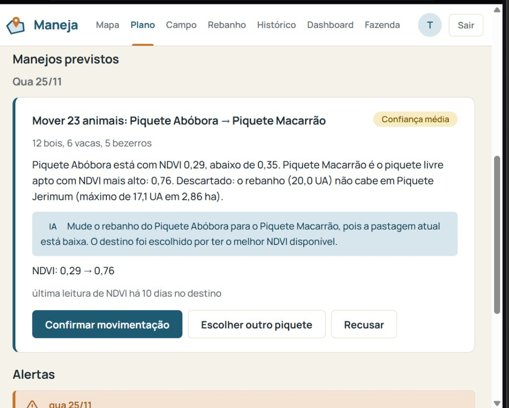
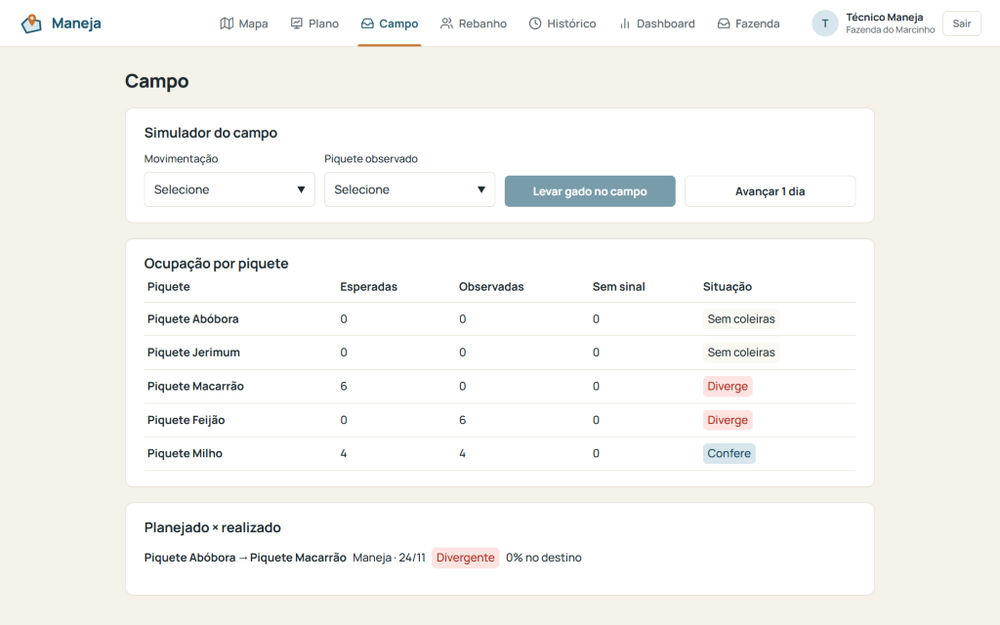

Equipe Delta · Tema 3: Sistemas Inteligentes para Agropecuária
Jackson Bruno · João Pedro · Kauê Fortaleza · Maria Antônia · Leonardo Lima · Leandro Cavalcante · Júlia Pereira · José Félix
maneja.tech
api.maneja.tech · Supabase + Vercel
Organização & Cronograma
Maneja
Equipe Delta, papéis de RH e marcos da AB2
Cada fatia do sistema (SPEC-001 a SPEC-016) foi distribuída pelos papéis da matriz RACI e rastreada no quadro Trello.
Integrante
Papel (Gestão de RH)
Principais entregas na AB2
Jackson Bruno
Gerente de Projeto (GER · Líder)
Alinhamento de escopo, documentação SDD e apresentação final (SPEC-014)
João Pedro
Front-end (FRN)
Interface web React/Leaflet, revisão de PRs e telas de monitoramento (SPEC-011)
Kauê Fortaleza
Back-end (BCK)
Base SDD, API FastAPI, autenticação JWT, PostgreSQL, identidade visual, SeuGado e deploy (SPEC-001–004, 008–010, 012, 013, 015)
Maria Antônia
Monitoramento e Dados (MID)
Tela Campo & coleiras GPS, Open-Meteo, NDVI Sentinel-2 e correções pós-revisão (SPEC-006, 007, 011)
Leandro Cavalcante
Inteligência Artificial (IA)
Alinhamento do agente, Gemini real com validador R3/cota R7 e conjunto-ouro de 30 casos (SPEC-005, 016)
Leonardo Lima
Inteligência de Dados
Modelagem de clima e dados de pastagem (SPEC-006 / revisão de métricas)
Júlia Pereira
Testes e Documentação
Rodada de testes BDD, triagem de defeitos e revisão SDD/UML (SPEC-014)
José Félix
Integração e Entrega
Revisão da integração, testes de entrega e documentação final (SPEC-014)
10/11 · Concluído
Core (50%)
Protótipo navegável alinhado à EAP, domínio, regras determinísticas e agente base.
24/11 · Concluído no prazo
Support (25%) + Generic (25%)
API REST, login, PostgreSQL, Open-Meteo, Gemini, Campo/coleiras, conjunto-ouro 90% e deploy em maneja.tech.
26/11 · Hoje
Apresentação Final
Demonstração presencial ao vivo, evidência de SDD + BDD + UML e entrega consolidada.
Maneja · Equipe Delta · UFAL · AB2 202602 / 12
Visão & Escopo do Produto
Maneja
O problema no campo e os 4 pilares entregues
No manejo rotacionado, decidir quando mover o gado depende do vigor do pasto — e confirmar se a troca aconteceu no campo quase nunca tem registro confiável.
1. Manejo inteligenteCore · 50%
Agente detecta piquete com NDVI baixo (< 0,35), escolhe destino apto por regras (NDVI ≥ 0,50, ≤ 6 UA/ha, sem chuva ≥ 40 mm), explica com Gemini e confere planejado × realizado pelas coleiras.
2. Monitoramento & 3. CadastrosSupport · 25%
Série semanal de NDVI por piquete (adaptador Copernicus Sentinel-2 com máscara de nuvem > 30%), previsão Open-Meteo, 10 coleiras GPS simuladas, estimativa de ocupação, desenho de polígonos no mapa e rebanho por categoria (bois, vacas, bezerros).
4. Funcionalidades genéricasGeneric · 25%
Autenticação JWT + PBKDF2, persistência transacional em PostgreSQL (Supabase), Dashboard com gráfico semanal, Histórico de decisões, identidade visual própria e navegação responsiva em 360 px.
Proposta em uma frase
“Mostrar ao técnico como está cada piquete e onde o gado está de fato, recomendar o manejo com transparência e provar se ele foi cumprido.”
Fora do escopo (deliberado no MVP)
Compra de hardware físico de coleiras (simuladas atrás de IColeiras — custo R$ 0).
Otimização com restrição de equipe/praça e Telegram (escopo do SeuGado).
Multi-fazenda na UI, pesagem individual e vacinação.
Maneja · Equipe Delta · UFAL · AB2 202603 / 12
Engenharia Orientada a Especificação
Maneja
Método SDD + BDD: nenhum código sem especificação
Seguimos rigorosamente o fluxo exigido na AB2: regras do projeto em CLAUDE.md, UML versionada em Markdown, specs fechadas e cenários Gherkin executáveis.
1
Contrato do Repo
CLAUDE.md fixa convenções, regra de independência, limites nomeados e fluxo de PR.
2
8 UMLs em .md
docs/uml/01..08 em Mermaid versionado, ligando cada diagrama aos arquivos de código.
3
16 Specs (SDD)
specs/SPEC-001..016 definem arquivos permitidos, requisitos verificáveis e fora de escopo.
4
10 Features BDD
backend/features/*.feature em Gherkin (Dado / Quando / Então) ligados ao pytest-bdd.
5
Revisão & Aceite
PR por spec, revisão entre pares, testes sem rede, validação no navegador e cartão no Trello.
Exemplo real de cenário executável (verificacao.feature)
Funcionalidade: Planejado x realizado pelas coleiras
Cenário: Gado levado para o piquete errado
Dado uma movimentação aceita do "Piquete Abóbora" para "Piquete Macarrão"
Quando as coleiras vão para o "Piquete Feijão" e passam 2 dias
Então a verificação aparece como "divergente"
E a fração observada no destino é 0%
Rastreabilidade completa no repositório
13 Decisões de Arquitetura (docs/01-decisoes.md): de Python/FastAPI (D2) e LLM explicador (D4) até Vercel+Supabase (D11) e identidade visual própria (D13).
8 Diagramas UML atualizados: Casos de Uso, Atividades, Sequência, Estados, Componentes, Implantação, Classes e Integração SeuGado.
17 de 18 cartões do Trello concluídos com checklist, links de commit e histórico de revisões.
Regras determinísticas decidem; Gemini apenas explica
Decisão D4 (Risco R3): o modelo de linguagem nunca escolhe destino nem altera lotação — e se falhar ou alucinar, o sistema mantém o texto seguro da regra.
https://maneja.tech/plano · Gemini 3.5 Flash-Lite ao vivo

Regras auditáveis (regras.py)
Saída: piquete ocupado com NDVI < 0,35.
Destino: livre, NDVI ≥ 0,50, capacidade ≤ 6 UA/ha (bezerro = 0,4 UA) e não recusado nos últimos 7 dias.
Clima (Open-Meteo): chuva ≥ 40 mm adia automaticamente para o próximo dia seguro.
Salvaguardas de IA (Riscos R3 e R7)
Validador R3: exige texto ≤ 400 caracteres citando origem e destino reais; fora disso, descarta.
Fallback no plano gratuito: cascata automática 3.5-flash-lite → 3.1-flash-lite → 3.6-flash → 3.8-flash em até 22 s.
Controle de cota (R7): teto diário por instância; HTTP 429 ou timeout nunca derrubam o plano.
Maneja · Equipe Delta · UFAL · AB2 202608 / 12
Diferencial do Sistema (SPEC-002 / SPEC-003 / SPEC-011)
Maneja
Tela Campo: fechando o ciclo planejado × realizado
As coleiras GPS comparam onde o rebanho deveria estar (cadastro/plano) com onde os animais realmente estão (posições recentes).
https://maneja.tech/campo

Classificação automática da execução
Cumprida≥ 75% das coleiras do lote observadas dentro do piquete de destino.
PendenteLote ainda na origem dentro da janela prevista (data + 1 dia).
DivergentePrazo vencido e gado fora do destino (ou movido para piquete errado).
Sem dadosMenos de 3 coleiras com sinal recente (últimas 6 h).
Simulador para demonstração
Ativado só com VITE_MODO_DEMO=1: permite mover as coleiras para o piquete certo ou errado e avançar dias para demonstrar Cumprida e Divergente ao vivo, persistindo tudo no Supabase.
Maneja · Equipe Delta · UFAL · AB2 202609 / 12
Fronteira de Sistemas & Integração (SPEC-003 / SPEC-012)
Maneja
Independência e integração opcional com o SeuGado
Decisão D3: dois sistemas independentes que se complementam por contrato HTTP estável — o Maneja nunca depende do SeuGado para subir, testar ou demonstrar.
MANEJA_SEUGADO_MODO=desligado
Modo padrão independente
O Maneja gera o próprio plano e verifica tudo sozinho. Usado em produção em maneja.tech.
MANEJA_SEUGADO_MODO=arquivo
Demo de contrato sem rede
Lê JSON no formato real do SeuGado (exemplos/plano-seugado.json) e exibe origem SeuGado em Campo.
MANEJA_SEUGADO_MODO=api
Integração real (SPEC-012)
Autentica via OAuth2 form (/auth/token), suporta token sem expires_in, faz cache de 10 min e trata 404/5xx sem travar.
Open-Meteo (cache/fallback), SeuGado API (401/404/TTL), Sentinel-2
test_persistencia.py
9
PostgreSQL, transação atômica, modo sem estado e 6 acessos paralelos
test_api + autenticacao
16
Endpoints REST, 409 em piquete ocupado, JWT HS256 + PBKDF2
agente + coleiras + verif. + ouro
21
Regras de manejo, GPS, planejado × realizado e meta 90% conjunto-ouro
Transparência do Conjunto-Ouro (docs/05-conjunto-ouro.md)
Os 30 casos cobrem capacidade (UA/ha), disputa entre dois rebanhos, chuva forte, recusas recentes, leitura antiga e empates. Em vez de “maquiar” regras, os 3 casos não plausíveis ficaram registrados para evolução futura:
C15 · Chuva forte a semana toda: agente marcou dia 0 quando não houve dia seco na janela de 7 dias.
C17 · Destino com NDVI de 40 dias: regra atual aceita com confiança baixa; gabarito preferiu bloquear.
C20 · Origem com leitura de 30 dias: mesma discussão de limiar de obsolescência de NDVI (critério 1.1.1).
Reproduzir: uv run python -m maneja.conjunto_ouro --relatorio
Maneja · Equipe Delta · UFAL · AB2 202611 / 12
Demonstração Presencial & Encerramento
Maneja
Roteiro da demonstração ao vivo e próximos passos
Tudo rodando em produção em https://maneja.tech — agora vamos mostrar o fluxo completo ao vivo.
1
Mapa, NDVI e Coleiras GPSEntrar em maneja.tech, mostrar os 5 piquetes coloridos por NDVI e ligar Mostrar coleiras GPS.
2
Plano da Semana + Open-Meteo + IAClicar em Gerar plano: previsão real, recomendação Abóbora → Macarrão e explicação com selo IA (Gemini).
3
Confirmação + Persistência RealAceitar a movimentação e recarregar a página para comprovar a gravação transacional no Supabase.
4
Campo · Execução CumpridaNo simulador em /campo, levar o lote ao Piquete Macarrão e ver Cumprida (100%) + Confere.
5
Campo · Desvio e DivergênciaSimular gado no Piquete Feijão, avançar 2 dias e mostrar Divergente + borda vermelha no Mapa.
6
SDD + BDD + Conjunto-OuroAbrir CLAUDE.md, specs/, docs/uml/ e rodar uv run pytest (105 passed) no terminal.
Evolução pós-MVP
Integração de coleiras físicas LoRaWAN/GPS via POST /coleiras/posicoes · rotina agendada de NDVI Sentinel-2 · ADR de confirmação automática no SeuGado · suporte a múltiplas fazendas · revisão dos 3 casos de borda do conjunto-ouro.
Obrigado! Perguntas?
Painel: https://maneja.tech
API Docs: https://api.maneja.tech/docs
Equipe Delta · Sistemas de Informação · UFAL